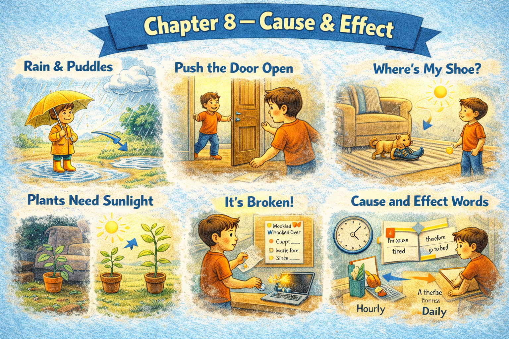

Chapter 8 — Cause & Effect

Micro Scene 1 — Direct Cause
1️⃣ Scene Text
When I delay a task, the overall pressure increases.
If I ignore small problems, they grow into larger ones.
A lack of clarity leads to hesitation.
Distraction reduces efficiency.
Consistent effort produces steady progress.
Poor planning creates unnecessary stress.
Clear priorities prevent confusion.
Overworking results in fatigue.
Small improvements generate noticeable change over time.
Every action produces a consequence.
Cause and effect are rarely separated.
2️⃣ Core Verb Pool
delay
increase
ignore
grow
lead to
reduce
produce
create
prevent
result in
generate
separate
3️⃣ Structure Patterns
When X + verb, Y + verb
If X + verb, Y + verb
X leads to + noun
X results in + noun
X produces + noun
X prevents + noun
Every X + verb
4️⃣ Replace & Extend
Replace the cause:
Lack of clarity leads to hesitation.
→ Lack of focus leads to delay.
→ Lack of structure leads to chaos.
Replace the effect:
Overworking results in fatigue.
→ Overthinking results in doubt.
→ Poor communication results in misunderstanding.
Replace the positive chain:
Consistent effort produces steady progress.
→ Practice produces improvement.
→ Planning produces efficiency.
5️⃣ Spoken Mode
If I delay something, pressure builds.
Ignoring small issues makes them bigger.
Clear priorities prevent confusion.
Overworking leads to fatigue.
Every action has a consequence.
🔎 Structural Notes
• “lead to / result in” mark causal direction.
• “prevent” expresses blocked outcome.
• Cause-effect sentences often avoid explicit “because”.
Micro Scene 2 — Indirect and Delayed Effects
1️⃣ Scene Text
Some actions do not produce immediate results.
Small habits influence outcomes gradually over time.
A minor delay today may create larger pressure next week.
If I neglect planning, confusion does not appear instantly, but it accumulates.
The effects of inconsistency often remain invisible at first.
Over time, however, patterns become noticeable.
Repeated distraction weakens focus in subtle ways.
Short-term comfort can lead to long-term inefficiency.
Certain consequences unfold slowly rather than abruptly.
The impact of a decision may only become clear later.
Delayed effects are harder to measure, but not less real.
2️⃣ Core Verb Pool
produce
influence
create
neglect
appear
accumulate
remain
become
weaken
lead
unfold
measure
3️⃣ Structure Patterns
X does not + verb immediately
X may + verb
Over time,…
At first…, however,…
X leads to + noun
X unfolds + adverb
X becomes + adjective
4️⃣ Replace & Extend
Replace the timeline:
The effect does not appear instantly.
→ The result does not become visible immediately.
→ The impact emerges gradually.
Replace the accumulation:
Confusion accumulates over time.
→ Stress builds slowly.
→ Fatigue increases gradually.
Replace the contrast:
At first the change is subtle; later it becomes obvious.
→ Initially the effect is minor; eventually it dominates.
→ Early signs are invisible; later they are undeniable.
5️⃣ Spoken Mode
Some actions don’t show results right away.
Small habits build up over time.
At first, you don’t notice it — but later it becomes obvious.
Short-term comfort can cause long-term problems.
Delayed effects are real, even if they’re subtle.
🔎 Structural Notes
• “Over time” marks gradual causality.
• “At first… however…” introduces delayed contrast.
• “unfold” implies progressive development.
Micro Scene 3 — Conditions and Outcomes
1️⃣ Scene Text
Results depend on the conditions under which actions are taken.
If the environment is stable, progress tends to accelerate.
When pressure increases, decision-making becomes more reactive.
Under clear constraints, creativity often becomes more focused.
If resources are limited, priorities must become sharper.
The outcome changes depending on context.
Even the same action can produce different results under different conditions.
When expectations are unrealistic, frustration follows naturally.
Certain outcomes only occur if specific requirements are met.
Conditions shape probability.
Without proper structure, effort does not translate into results.
2️⃣ Core Verb Pool
depend
accelerate
increase
become
limit
change
produce
follow
occur
meet
shape
translate
3️⃣ Structure Patterns
X depends on + noun
If X + verb, Y + verb
When X + verb, Y + verb
Under + condition
Even + noun + can + verb
X occurs only if + clause
Without X, Y does not + verb
4️⃣ Replace & Extend
Replace the condition:
If resources are limited…
→ If time is limited…
→ If clarity is limited…
Replace the outcome:
Decision-making becomes reactive.
→ Focus becomes unstable.
→ Productivity becomes inconsistent.
Replace the dependency:
Results depend on conditions.
→ Performance depends on preparation.
→ Stability depends on alignment.
5️⃣ Spoken Mode
Results depend on the situation.
If pressure goes up, decisions become more reactive.
Under tight constraints, focus actually improves.
The same action can lead to different results.
Without structure, effort doesn’t translate into progress.
🔎 Structural Notes
• “Under…” compresses conditional context.
• “translate into” expresses conversion of effort into outcome.
• “occur only if…” marks necessary condition.
Micro Scene 4 — Trade-offs and Consequences
1️⃣ Scene Text
Every decision involves a trade-off.
If I focus on speed, I may sacrifice accuracy.
When I prioritize short-term results, long-term stability can weaken.
Choosing one option often means rejecting another.
More effort in one area reduces available energy elsewhere.
Efficiency sometimes comes at the cost of flexibility.
If I say yes to everything, I lose control over priorities.
Certain gains require corresponding losses.
Improvement in one dimension may create pressure in another.
Trade-offs are not failures; they are structural consequences.
Awareness of trade-offs leads to better decisions.
2️⃣ Core Verb Pool
involve
focus
sacrifice
prioritize
weaken
choose
reject
reduce
come at the cost of
lose
require
create
lead
3️⃣ Structure Patterns
Every X + verb
If X + verb, Y + verb
Choosing X means + verb-ing
X comes at the cost of + noun
X requires + noun
Improvement in X may + verb
Awareness of X leads to + noun
4️⃣ Replace & Extend
Replace the trade-off:
If I focus on speed…
→ If I focus on perfection…
→ If I focus on quantity…
Replace the cost:
Efficiency comes at the cost of flexibility.
→ Speed comes at the cost of depth.
→ Comfort comes at the cost of growth.
Replace the awareness:
Awareness leads to better decisions.
→ Reflection leads to improvement.
→ Evaluation leads to adjustment.
5️⃣ Spoken Mode
Every choice has a cost.
If I move faster, I might lose accuracy.
Saying yes to one thing means saying no to something else.
Improving one area can create pressure in another.
Understanding trade-offs helps me decide better.
🔎 Structural Notes
• “come at the cost of” expresses structural sacrifice.
• “means + verb-ing” clarifies implication.
• Trade-offs imply constraint, not error.
Micro Scene 5 — Feedback Loops
1️⃣ Scene Text
Certain actions create feedback loops that reinforce themselves.
If I complete small tasks quickly, I feel motivated to continue.
That motivation increases productivity, which leads to further completion.
Positive feedback strengthens progress over time.
However, negative loops can also emerge.
If I delay one task, I feel pressure, which reduces focus.
Reduced focus causes further delay.
The cycle repeats unless it is interrupted deliberately.
Feedback loops amplify initial conditions.
Small triggers can produce exponential effects.
Breaking a negative loop requires conscious intervention.
2️⃣ Core Verb Pool
create
reinforce
complete
feel
increase
lead
strengthen
emerge
reduce
cause
repeat
amplify
produce
break
require
3️⃣ Structure Patterns
If X + verb, Y + verb
X leads to + noun
X causes + noun
The cycle repeats
X amplifies + noun
Breaking X requires + noun
Small X can + verb
4️⃣ Replace & Extend
Replace the positive loop:
Completion increases motivation.
→ Progress builds confidence.
→ Success encourages repetition.
Replace the negative loop:
Delay reduces focus.
→ Stress reduces clarity.
→ Confusion increases hesitation.
Replace the intervention:
Breaking the loop requires discipline.
→ Interrupting the cycle requires awareness.
→ Changing direction requires intention.
5️⃣ Spoken Mode
Finishing small tasks builds momentum.
That momentum makes it easier to keep going.
But delay can create a negative cycle.
The more I delay, the worse it gets.
To stop it, I have to interrupt the pattern.
🔎 Structural Notes
• “The cycle repeats” expresses systemic recurrence.
• “amplify” indicates magnified consequence.
• Feedback loops are recursive cause-effect chains.
Micro Scene 6 — Necessary vs Sufficient Causes
1️⃣ Scene Text
Not every cause is sufficient to produce an outcome.
Effort is necessary for progress, but it is not always sufficient.
If the direction is wrong, increased effort does not guarantee improvement.
Clear goals are required, yet clarity alone does not ensure success.
Certain conditions must be met before results can occur.
A single factor rarely determines the final outcome.
Success often depends on a combination of aligned elements.
Removing one critical component may collapse the entire structure.
Necessary causes create the possibility of change.
Sufficient causes guarantee it.
Understanding the difference prevents oversimplification.
2️⃣ Core Verb Pool
produce
require
guarantee
ensure
occur
determine
depend
remove
collapse
create
prevent
3️⃣ Structure Patterns
Not every X + verb
X is necessary, but not sufficient
If X + verb, Y does not + verb
X alone does not + verb
X depends on + noun
Removing X may + verb
Understanding X prevents + noun
4️⃣ Replace & Extend
Replace necessity:
Effort is necessary.
→ Planning is necessary.
→ Discipline is necessary.
Replace insufficiency:
Clarity alone does not ensure success.
→ Speed alone does not guarantee quality.
→ Confidence alone does not produce results.
Replace dependency:
Success depends on alignment.
→ Stability depends on structure.
→ Progress depends on consistency.
5️⃣ Spoken Mode
Effort is necessary, but it’s not enough.
Clarity alone won’t guarantee success.
If the direction’s wrong, working harder won’t help.
Most outcomes depend on multiple factors.
Understanding what’s necessary and what’s sufficient makes thinking clearer.
🔎 Structural Notes
• “necessary but not sufficient” is a logical distinction.
• “X alone does not…” isolates single-factor thinking.
• Structural causality requires multiple aligned variables.
🔸 Integration Scene — Structure of Causality
Actions produce consequences, but not always immediately.
Some effects appear directly, while others unfold gradually.
Conditions influence outcomes.
Trade-offs shape decisions.
Feedback loops amplify initial triggers.
Necessary factors create possibility.
Sufficient factors guarantee results.
Delays increase pressure.
Clarity reduces hesitation.
Over time, repeated actions reinforce patterns.
Without structure, effort fails to translate into progress.
Small causes accumulate into significant effects.
Cause and effect are embedded within systems.
Nothing happens in isolation.
Every result depends on context.
Understanding causality clarifies action.
Integration Verb Focus
produce
influence
depend
amplify
require
translate
reinforce